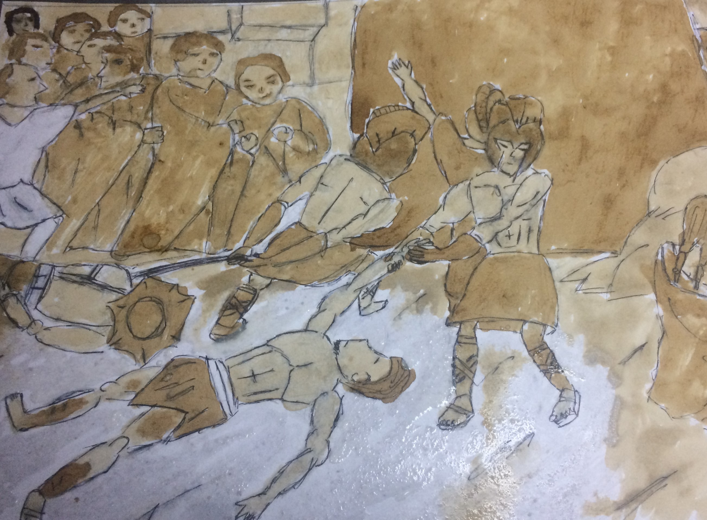
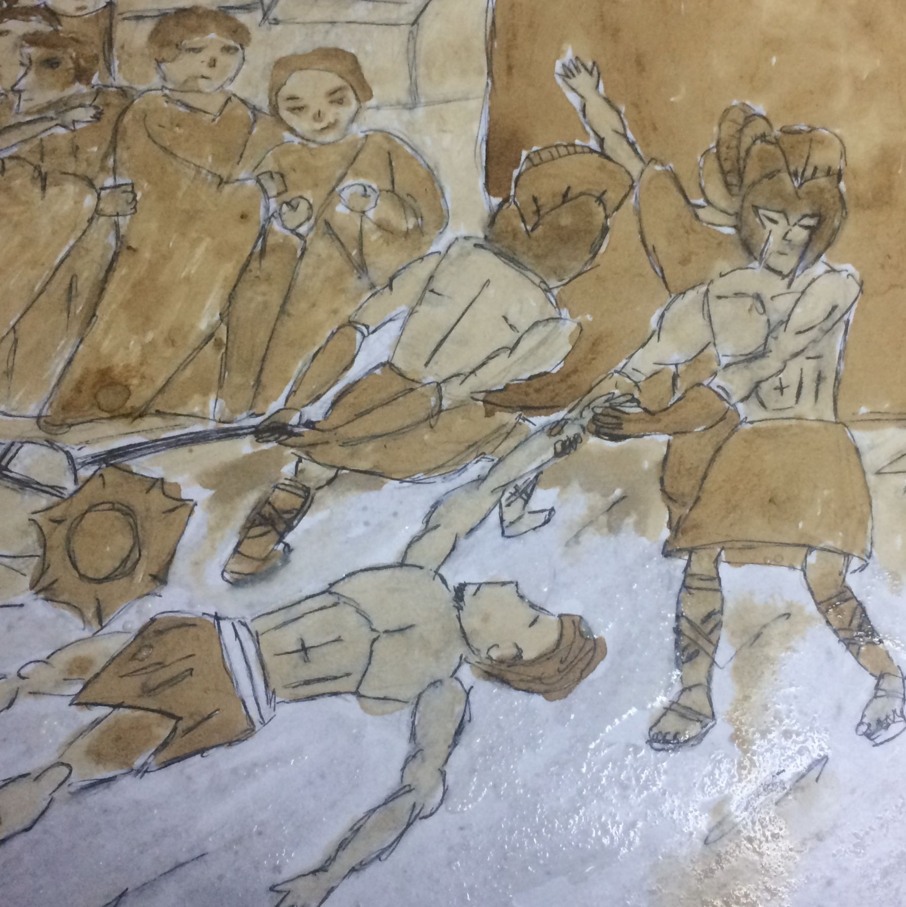
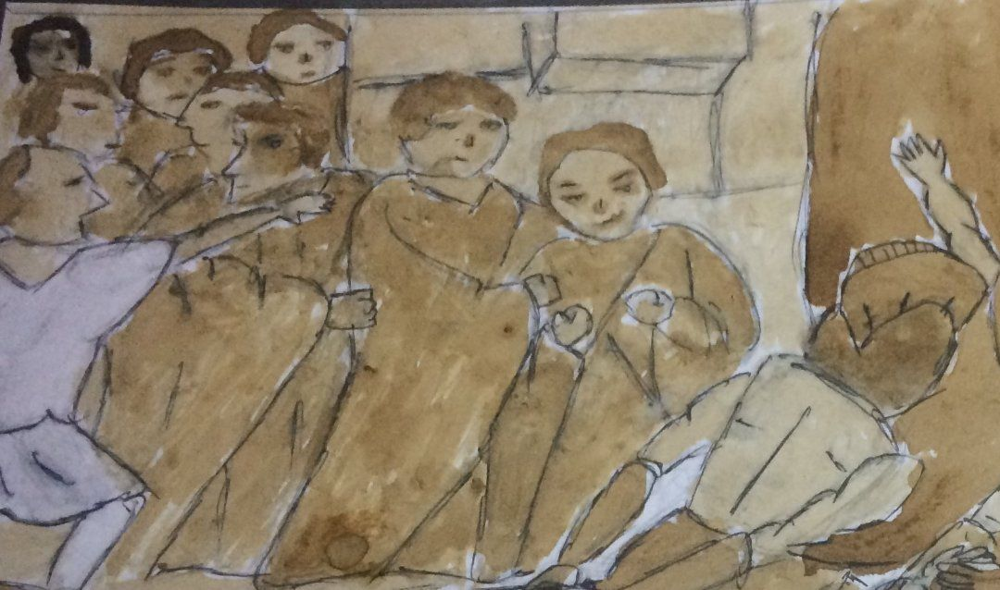
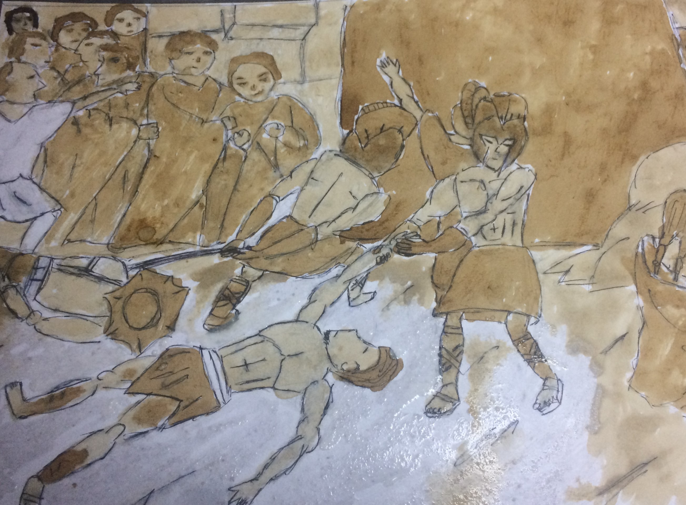
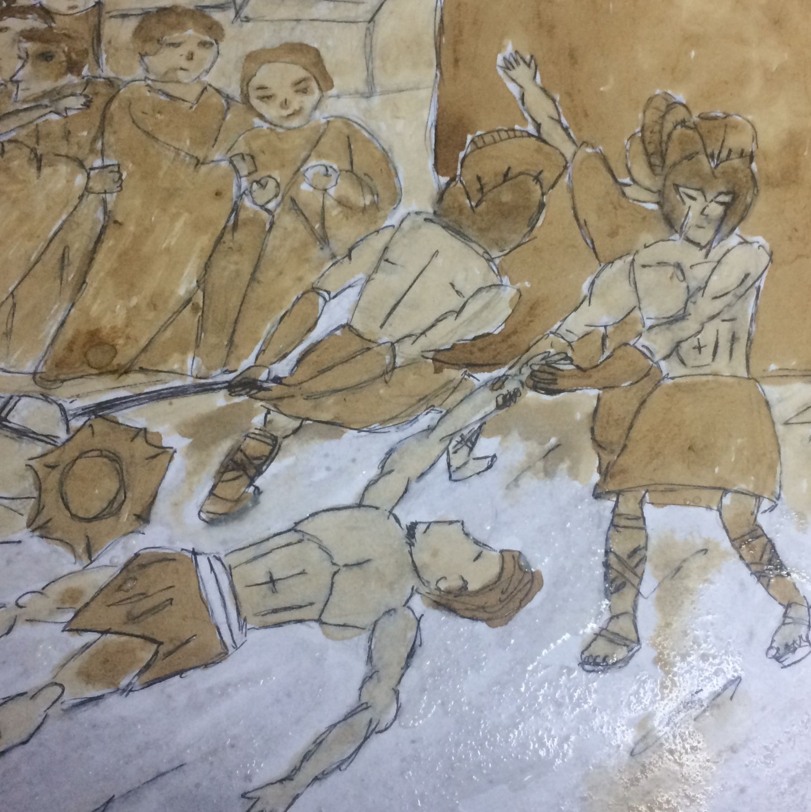
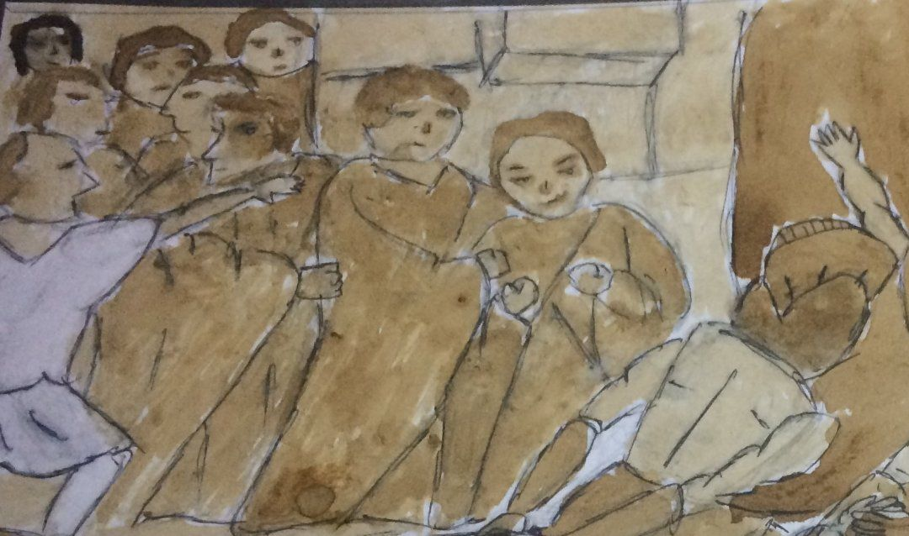

This painting is inspired by the famous painting "Spolarium" but instead of using paint I use coffe instead. I always love the "Spolarium" because it giving me the chill when I look at it. The pain, anger and sadness inside that painting makes it one of a kind. So I decided tp recreate it using coffe.